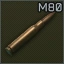
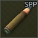

Welcome Warrior
In the war-ravaged world of Escape from Tarkov, cultists are a mysterious and formidable adversary that players must learn to hunt effectively. These enigmatic factions, known for their eerie rituals and devout loyalty to their dark beliefs, roam the streets and forests of Tarkov, posing a significant threat to scavengers and PMC operatives alike. To successfully hunt cultists, it is essential to approach with caution, for they are often armed with deadly close-quarters weapons and demonstrate an uncanny ability to blend into their surroundings. Employing stealth, well-placed shots, wether it be alone or with your squadmates is key to taking down these fanatical foes and securing their valuable loot. This page will show you how to do just that, by providing an in depth guide on different strategies, weapons, angles and more to not only take out the mysterious cult, but also adapt to the dangerous situations you might find yourself in.
Knowing your enemey
Basic information on cultists class, loot, and loadouts
Cultists prefer to dwell in the dark of the night. They can be found between the hours of 22:00 and 7:00 in varying group sizes on locations:
Customs
Shoreline
Factory
Woods
The Cult of tarkov features its own distinctive classes, those being the Priest, leaders within the cult who are strong and tricky foes, deploying their underlings to fight in their steed. and the Warriors devoted followers of the priest who are very aggressive when provoked. While the two differ in class, their relevant loadouts remain relatively similar. below are cultists healthpools and some highly sought after gear worth picking up.
| Priest | Warrior |
|---|---|
 Note that a Priest will not spawn with Armor |
 Warriors always have armor with 20 additional thorax hp |
| Weapons | Ammunition | Armor | Items |
|---|---|---|---|


|
 |
|

|
 |
 |
||


|


|
 |
|

|

|
||

|


|
||
|
|
Recommended loadouts
Loadouts for cultists engagement
now that we are more familiar with the scale of the threat, its much easier to workshop a loadout that fits the appropriate playstlyle. there is all kinds of gear up for grabs on the market of tarkov, being able to identify what will help you for the right price is a cruicial part of tarkovs gameplay loop and is something all players should be familiar with if theyre even considering taking on such a formidable foe.
Ammunition
Ammo is going to be the most important part of taking on the culstist. Having the right caliber to not only pierce their armor, but also guarantee headshot eliminations is very crucial as these enemies have more health than the average foe in tarkov. In terms of fighting against cultists, typically you want to have 7.62 or greater, because of its armor penetration, velocity and base flesh damage. Listed below are some cost efficient options that yield consistent results:
| 7.62x39mm | 7.62x51mm | 9x39mm |
|---|---|---|
|

|
 |
Some other high caliber rounds are effective but are not cost efficient, so use them at your own discretion.
Weapons
Being fitted with the right firearm most definitely has an impact on efficiency when it comes to hunting cultists. Weapons with both single and automatic firing settings are ideal, as they provide you with stability for close quarters and ranged combat and enables the user to adapt to the warriors rapidly changing behaviour. however some single fire options are still optimal due to the high muzzle velocity. The most cost efficient weapons are NATO firearms, so they cost USD or have inflated prices on the market but are reliable weapons bottomline.
| Weapon Name | Weapon | Trader Price | Flea Market Price |
|---|---|---|---|
| M1A SASS | ₽123944 | N/A | |
| SR-25 | $924 | N/A | |
| MDR (7.62 variant) |  |
$1345 | N/A |
| SA-58 | $980 | ₽94000 | |
| MK47 (Mutant) | ₽140253 | N/A |
Tactical Devices
When working at night, having the right technology that gives you an edge in the darkness can be very beneficial. Night vision, Ir laser pointers and searchlights, and even functional modifications such as holographic scopes can make taking down your target a walk in the park. However, it's important to keep in mind that it can get costly very quickly, especially in terms of night vision, it is strongly recommended not to use anything else other than the GPNVG-18 because of its wide field of view and image quality, everything while cheaper does not provide the benefits seen in these nods.
Armour
Survival is paramount, and venturing into the night to hunt down cultists requires careful consideration of every aspect of your gear. Selecting the right armor is a pivotal decision, as it can mean the difference between life and death at the height of an intense firefight. Cultists are cunning adversaries, and your choice of armor will determine your ability to withstand their relentless attacks, from their high-power ammo and well-placed shots. Given the scarcity of high-level armor, there will be a focus on more accessible lower-tier gear.Whether you prioritize mobility, protection, or a balance of both, your selection will define your strategy. Listed below are some recommendations for each weight class and coverage.
| Icon | Armor | class | Coverage | Weight |
|---|---|---|---|---|

| GZHEL-K | Class 4 | throax, stomach |
8.9 kg |
| Trooper | Class 4 | throax | 6.8 kg | |
| AVS | Class 4 | throax, stomach |
8.7 kg | |
| TV-110 | Class 4 | throax, stomach |
10.3 kg |
backpack
Probably the most straightforward aspect of prepping your gear. Cultists have a chance of spawning with high-tier level 5-6 armor. Highly sought after so you want to be able to carry it out once the firefight is concluded. Having a large backpack adds weight to your character but at night your chances of running into further combat are unlikely however this does not mean it is impossible. The amount of profit and gear you receive after a successful hunt is something you want to fully indulge in so here are some recommended examples of large affordable backpacks to make the most of the loot.
Cultist Combat
Ai behaviours and engagement tactics
behaviour
Cultists are highly known for their stealth. They tend to hide in off angles, foliage, and areas with high coverage, and attack when you least expect it. They can be fairly spread at most times, this way they can cover a wider area, this however can delay their rotations to different points. When scanning an area they will always be either prone or crouched in cover. They are cold-blooded, which means they will not appear on thermal radars, and their footsteps are completely silent. The only audio queues they give are rummaging through foliage, faint whispers, or tiny grunts when injured. When approached by a player, 1 or 2 warriors will coordinate a stealth attack using a knife to inflict intoxication, it will then retreat back to its post. If aimed at for too long, they will retaliate with suppressed gunfire. If a warrior is fired upon, the injured cultist will return fire, and the priest will retreat. whereas if a priest is fired upon, all cultists will converge on the player's location from all directions in an attempt to take them out, they will also throw grenades to force a rotation.

rules of engagement
- When engaging with cultists, it's very important to take things slow. Analyze the area and look for a sealable area with as little as 2 entrances. This is important as once the cultists are agitated they will try to push you from multiple locations, so minimizing the amount of places they can push you from will make it much easier to take them on.
- Never push, always let them come to you. They tend to act very slow but it's better to take them on one to two at a time. Being able to confirm your kill will allow you to keep track of how many might be left.
- Never hold a wide angle. When cultists are in an aggressive state they like to switch up their hiding spots and peek around cover. If too much of your body is exposed at a time. And if they see you before you see them it will 9 times out of 10 lead to a swift death. This also allows you to get easy headshots while taking fire.
- If approached by enemy PMCs, always fight them before fighting the cultists, as juggling both will make it much harder to keep track of everything that is happening.
Sherpa Request
This is a small guide on how to take on a tough enemy in a battlefield that changes every day. we are not perfect and make mistakes, so you dont have to fight this battle alone. fill out the form below to be paired with one of tarkovs community sherpas. form a squad and take on the dangers of tarkov together! or if you have any recommendations for our guides let us know how we can improve, and help small time operators make it big in the exciting world of Escape from Tarkov.